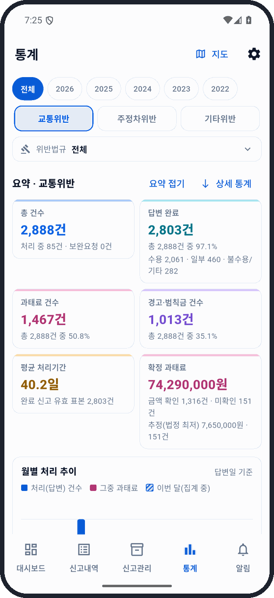
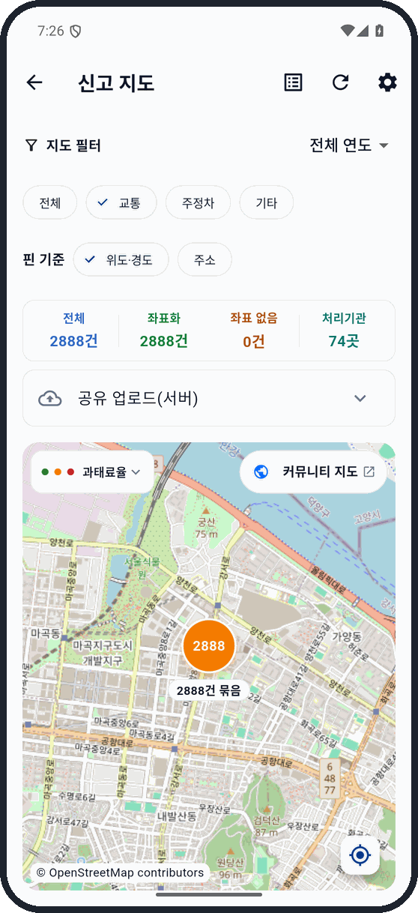

03 / MOBILE · WEB · EXTENSION
나만의 안전신문고
앱·지도·크롬 확장
신고 내역의 수집·저장·검색·통계를 구현한 데이터 서비스입니다.
모바일 앱, 커뮤니티 지도와 웹사이트 조회 확장을 함께 구성했습니다.
01 / 서비스 구조
수집한 자료를 세 가지 화면에서 사용합니다.
01FLUTTER · DART · SQLITE나만의 안전신문고 앱
신고 수집 · 로컬 저장 · 검색 · 지도·통계
공유에 동의한 자료
공유 데이터 처리Python 파서 · PostgreSQL · 인증·조회 API
02REACT · TYPESCRIPT커뮤니티 지도
지역·기간·기관별 집계
지도·표·차트로 비교
03JAVASCRIPT · MANIFEST V3크롬 확장
안전신문고 웹 화면에서
본인의 완료 신고 조회
행정안전부 공식 서비스가 아닌 개인 개발 프로젝트입니다. 커뮤니티 기능은 로그인과 데이터 공유 동의를 사용합니다.
02 / 구현 기술
클라이언트와 데이터 처리를 분리했습니다.
| 구성 | 언어·기술 | 구현 내용 |
|---|---|---|
| Android 앱 | Dart · Flutter · Kotlin · SQLite | 신고 목록·상세 수집, 검색·통계·지도, 변경 알림, 백업·복원 |
| 공유 데이터 처리 | Python · psycopg · PostgreSQL · Docker | 처리 결과 파싱·정리, 큐 처리, 실패 재시도와 버전별 재처리 |
| 인증·공유 동의 | TypeScript · Supabase Auth · Edge Functions | 계정 확인, 기기 연결, 공유 동의·철회·삭제 |
| 커뮤니티 지도 | TypeScript · React · Vite · ECharts · Kakao Maps | 지역·기간·기관 필터, 지도 집계, 처리 비율, 표·차트 |
| Chrome 확장 | JavaScript · Manifest V3 · service worker · Shadow DOM | 기존 웹사이트에 조회 패널 추가, 본인이 공유한 완료 신고 검색 |
03 / 데이터 처리
동기화와 재처리를 관리합니다.
앱의 로컬 데이터
신고 목록과 상세정보를 수집해 SQLite에 저장합니다. 검색·지도·통계가 같은 로컬 자료를 사용합니다. 공유할 자료는 별도 전송 대기열에서 전송과 재시도를 관리합니다.
공유 자료의 정규화
서버 워커가 원문에서 처리 상태, 처분, 금액 등 조회 항목을 정리합니다. 작업 실패를 구분해 재시도하고 파서 변경 시 다시 처리할 수 있도록 구성했습니다.
04 / 화면
통계·지도·조회 화면




커뮤니티 지도
지도·필터·기관별 통계 화면을 추가합니다.
화면 준비 중 · 추후 추가크롬 확장
식별정보를 가린 차량·주소 조회 화면을 추가합니다.
화면 준비 중 · 추후 추가앱 이미지는 기존 공개 README 화면으로 현재 버전과 일부 차이가 있습니다. 현행 앱의 Demo 화면과 연결 시연은 추후 추가합니다.
05 / 배포·운영
앱과 웹을 각각 배포합니다.
- Android
- GitHub Actions · AAB 빌드 · Google Play 배포
- 웹 지도
- Cloudflare Workers 정적 화면 · 조회 API · PostgreSQL
- Chrome 확장
- esbuild · ZIP 배포
- 개선 사례
- 신고 정렬, 동기화 상태, 화면 갱신과 주소 조회 패널 유지
기존 PC 수집 도구를 모바일 독립 실행 방식으로 전환했습니다. 앱에서 수집·저장·조회를 처리하고, 기존 사용자 데이터를 옮기는 절차를 구성했습니다.